22 molécules6 à dessiner21 concepts4 questions du prof
Le mécanisme d'action explique les interactions : c'est l'idée centrale du chapitre. Les azolés bloquent la 14-α-déméthylase (CYP51) de la synthèse de l'ergostérol, mais aussi des CYP humains.
gras souligné = comprendrebleu = DCI + nom commercial + classebleu gras souligné = dessinerrouge = très important
22 molécules (6 à dessiner) · afficher :
Antimycosiques et antiprotozoaires syllabus p. 124-147
Concepts à comprendre (21)
Mycoses locales vs généralisées
Les mycoses sont le plus souvent locales (Candida, Epidermophyton, Microsporum, Trichophyton, Malassezia) ; elles peuvent être généralisées (Aspergillus, Blastomyces, Candida…). Généralisée → traitement systémique. Superficielle → traitement local, moins d'effets indésirables généraux ; le systémique seulement si échec local, infection étendue ou récidives fréquentes. Mycose du cuir chevelu : systémique généralement nécessaire.
Pourquoi préfère-t-on un traitement local pour une mycose superficielle ?
Parce qu'un traitement local est moins susceptible d'entraîner des effets indésirables généraux qu'un traitement oral ; on garde l'oral pour l'échec, l'extension ou les récidives.
Dermatomycoses
Les plus fréquentes : tinea pedis (pied d'athlète), onychomycose (mycose unguéale), tinea corporis, tinea cruris, intertrigo à Candida (plis cutanés) et pityriasis versicolor.
Pourquoi un pied d'athlète et une onychomycose sont-ils traités différemment ?
Le pied d'athlète est superficiel (crème/spray) ; l'onychomycose sévère peut nécessiter un vernis (amorolfine) ou un oral (terbinafine) car l'ongle est difficile à atteindre.
Cibles des antimycosiques
Les principaux antimycosiques agissent sur la paroi fongique (caspofungine), la membrane riche en ergostérol (polyènes), la biosynthèse de l'ergostérol (azolés, terbinafine, amorolfine) ou les microtubules impliqués dans la division cellulaire (griséofulvine).
Pourquoi l'ergostérol est-il une cible intéressante ?
Il est propre aux champignons ; chez l'homme c'est le cholestérol qui joue ce rôle, d'où une certaine sélectivité.
Dermatophytes
Champignons qui se développent dans les tissus « morts » de la peau et de ses annexes (couche cornée, cheveux, ongles) : Microsporum, Epidermophyton, Trichophyton. Cible de la griséofulvine (fongistatique).
Pourquoi la griséofulvine est-elle indiquée dans les mycoses des cheveux et des ongles ?
Parce qu'elle est active sur les dermatophytes, qui colonisent justement les tissus kératinisés (cheveux, ongles, couche cornée).
Cytosquelette, tubuline et mitose
La tubuline (dimères α/β) polymérise en microtubules (13 protofilaments, ~25 nm). Lors de la mitose, ils se dépolymérisent puis se repolymérisent en fuseau mitotique. La griséofulvine empêche la formation du fuseau : premier médicament agissant sur le cytosquelette.
Pourquoi une protéine structurale comme la tubuline peut-elle être une cible thérapeutique ?
Parce que la division cellulaire dépend du fuseau mitotique formé de microtubules : bloquer la tubuline bloque la mitose.
Médicaments agissant sur la tubuline
Selon leur pharmacocinétique : antinéoplasiques (alcaloïdes de la pervenche qui inhibent la polymérisation ; taxoïdes qui empêchent la dépolymérisation), antihelminthiques benzimidazolés, antigoutteux (colchicine, podophyllotoxine) et antifongique (griséofulvine).
Pourquoi des médicaments qui ont la même cible (tubuline) ont-ils des usages si différents ?
Leur absorption digestive et leur affinité tissulaire diffèrent, ce qui oriente leur usage (cancer, vers, goutte, champignons).
Polyènes : usage externe et tractus gastro-intestinal
Macrolides à doubles liaisons conjuguées portant souvent un aminosucre. Non résorbés : usage externe (pommades, ovules, comprimés vaginaux) ou per os pour traiter des infections du tractus gastro-intestinal. En IV, toxicité très grande, surtout rénale.
Pourquoi un polyène pris par la bouche peut-il soigner une candidose digestive sans effet général ?
Parce qu'il n'est pas résorbé : il agit localement dans le tube digestif.
Amphotéricine B : formes injectables et liposomes
Absorption orale très faible. Molécule peu soluble quel que soit le pH : formes galéniques spéciales, ABELCET® (complexe lipidique) et AMBISOME® (liposomes). IV réservée aux formes graves de mycoses systémiques et/ou profondes ; dose test souvent administrée avant la perfusion. Liposomes : moins toxiques, plus grand volume de distribution.
Pourquoi a-t-on développé des formes liposomales d'amphotéricine B ?
Parce que la molécule est peu soluble et très néphrotoxique ; les liposomes/complexes lipidiques donnent moins d'effets indésirables, notamment rénaux.
Nystatine : candidoses oropharyngées
Polyène moins efficace que l'amphotéricine B, utilisé en suspension dans les affections bucco-pharyngées (candidoses oropharyngées), fréquentes chez les immunodéprimés (VIH+, sous corticoïdes).
Pourquoi un patient sous corticoïdes inhalés ou immunodéprimé reçoit-il souvent de la nystatine ?
Car l'immunodépression favorise les candidoses oropharyngées, que la nystatine traite localement en suspension.
Les azolés bloquent la synthèse de l'ergostérol
Les dérivés imidazolés et triazolés bloquent la synthèse de l'ergostérol, constituant essentiel de la membrane des levures et champignons ; chez les mammifères, c'est le cholestérol qui joue ce rôle.
Pourquoi bloquer la synthèse de l'ergostérol tue-t-il ou freine-t-il le champignon ?
Sans ergostérol, la membrane fongique perd son intégrité et sa fluidité.
Mécanisme d'action et explication des interactions (CYP51)
Un azote du noyau imidazole/triazole se lie au fer de l'hème du CYP51 fongique (stérol 14-α-déméthylase) → blocage de l'ergostérol. Les CYP humains (CYP3A4, CYP2C9, CYP2C19) ressemblent au CYP51 : les azolés les inhibent aussi → hausse des concentrations des médicaments métabolisés, toxicité possible. Le CYP51 humain (CYP51A1) produit le cholestérol.
Pourquoi les azolés antifongiques ont-ils autant d'interactions médicamenteuses ?
Parce que le même mécanisme (liaison de l'azote au fer de l'hème) inhibe aussi les CYP450 humains, surtout le CYP3A4, ce qui ralentit le métabolisme d'autres médicaments.
Hépatotoxicité du kétoconazole
Le kétoconazole, 2e imidazolé utilisé par voie orale (bonne biodisponibilité), n'est plus utilisé qu'exceptionnellement par voie systémique à cause de son hépatotoxicité ; il reste en crème et shampooing (NIZORAL®).
Pourquoi le kétoconazole est-il surtout vendu en shampooing aujourd'hui ?
Parce que par voie orale il est hépatotoxique ; en local, ce risque général est évité.
Kétoconazole et syndrome de Cushing
Inhibiteur de la stéroïdogenèse : inhibe plusieurs CYP surrénaliens (17α-hydroxylase surtout, 11-hydroxylation, clivage de la chaîne latérale du cholestérol à fortes doses, lyase C17-20) → baisse du cortisol, de l'aldostérone et des androgènes. Comprimés de 200 mg indiqués dans le syndrome de Cushing (adulte et enfant > 12 ans).
Pourquoi un antifongique peut-il traiter un syndrome de Cushing ?
Parce qu'en inhibant des CYP450 surrénaliens, il bloque la synthèse du cortisol, dont l'excès cause le syndrome de Cushing.
Triazolés per os
Itraconazole, posaconazole, fluconazole, voriconazole : utilisés per os pour des mycoses systémiques graves (souvent chez l'immunodéprimé). Itraconazole efficace dans l'aspergillose ; voriconazole à large spectre (Candida, Aspergillus, Scedosporium).
Pourquoi les triazolés sont-ils réservés aux mycoses systémiques graves ?
Ce sont des antifongiques systémiques (per os) avec des effets indésirables et interactions (CYP3A4) : on les garde pour les infections graves.
Interactions médicamenteuses des azolés
Kétoconazole, itraconazole et voriconazole inhibent le CYP3A4 : ralentissement du métabolisme et hausse des concentrations plasmatiques de ses substrats (ciclosporine, triazolam, midazolam…). Effets indésirables des azolés : atteinte hépatique grave (surtout kétoconazole), troubles GI, céphalées, prurit, baisse de testostérone et cortisol.
Pourquoi un patient sous midazolam peut-il être trop sédaté s'il commence de l'itraconazole ?
L'itraconazole inhibe le CYP3A4 qui métabolise le midazolam : sa concentration plasmatique augmente.
Squalène époxydase (terbinafine)
La terbinafine (allylamine) inhibe la biosynthèse de l'ergostérol à un stade différent des azolés : elle inhibe la squalène époxydase, pas la 14-déméthylase.
Pourquoi la terbinafine n'a-t-elle pas les mêmes interactions de mécanisme que les azolés ?
Elle n'agit pas sur le CYP51 (14-déméthylase) mais sur une étape plus précoce, la squalène époxydase.
Paroi fongique (chitine et glucane)
Chez Candida, Aspergillus, Cryptococcus, la membrane est recouverte d'une paroi externe de chitine (polymère de N-acétylglucosamine) et de glucane. Les inhibiteurs de leur synthèse sont antifongiques : la caspofungine inhibe la β-(1,3)-D-glucane synthase, comme les β-lactames visent la paroi bactérienne.
Pourquoi compare-t-on la caspofungine aux β-lactames ?
Parce que les deux empêchent la synthèse de la paroi du micro-organisme (glucane chez le champignon, peptidoglycane chez la bactérie).
Mécanisme des nitroimidazolés
Les bactéries anaérobies et parasites sensibles possèdent un équipement enzymatique qui transforme les nitroimidazoles en dérivés réduits toxiques altérant l'ADN (brins dissociés). Ils réduisent le NO2 bien plus vite que les cellules de l'hôte. Mode d'action identique aux nitrofurannes.
Pourquoi le métronidazole est-il actif sur les anaérobies et peu toxique pour nos cellules ?
Parce que ce sont les germes (anaérobies, parasites) qui réduisent rapidement le groupe NO2 en métabolites toxiques pour l'ADN ; nos cellules le font beaucoup plus lentement.
Cl en rouge : isoconazole vs miconazole
Dans les structures p.132, les Cl du cycle benzylique sont en rouge : 2,6-dichloro pour l'isoconazole, 2,4-dichloro pour le miconazole. Le reste de la molécule est identique.
Pourquoi le professeur met-il ces Cl en rouge ?
Parce que c'est la seule différence structurale entre les deux imidazolés : leur position permet de les distinguer.
N en rouge dans les triazolés
Dans l'itraconazole (p.134) et le fluconazole (p.135), un azote du cycle triazole est en rouge : c'est l'azote supplémentaire qui distingue un triazole (3 N) d'un imidazole (2 N).
Pourquoi souligner cet azote ?
Pour bien distinguer les triazolés (itraconazole, fluconazole…) des imidazolés (kétoconazole…) qui ont un squelette parfois très proche.
Ergostérol vs cholestérol (en rouge)
Sur la structure de l'ergostérol (p.130), les éléments absents du cholestérol sont en rouge : double liaison supplémentaire dans le cycle B (en 7), double liaison dans la chaîne latérale et méthyle supplémentaire. Tableau p.131 : CYP51 fongique → ergostérol ; CYP51A1 humain → cholestérol (précurseur des hormones stéroïdes).
Pourquoi les azolés ont-ils un effet indésirable sur la synthèse des stéroïdes humains ?
Parce que le CYP51 humain est très similaire au CYP51 fongique ; les azolés peuvent donc aussi l'inhiber ( cible chez le champignon, effet indésirable chez l'homme).
Griséofulvine (antifongique agissant sur les microtubules)
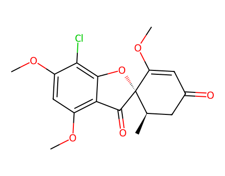
Griséofulvineà dessiner
pas de nom commercial au cours
Griséofulvine (antifongique agissant sur les microtubules) — Antibiotique antifongique naturel (Penicillium griseofulvum)
Mécanisme : Agit sur le cytosquelette : empêche la formation du fuseau mitotique (microtubules de tubuline) et donc la division cellulaire. Premier exemple de médicament agissant sur le cytosquelette (p.126-127).
Indications : Mycoses à dermatophytes des cheveux, des ongles et de la peau (p.125)
Structure-activité
Deux carbones asymétriques → 4 isomères possibles ; seul l'isomère naturel est actif (p.125). Molécule lipophile.
GRISÉO-fulvine = cheveux GRIS : elle soigne cheveux, ongles et peau (dermatophytes) et se prend avec du gras.
Dérivés azoliques
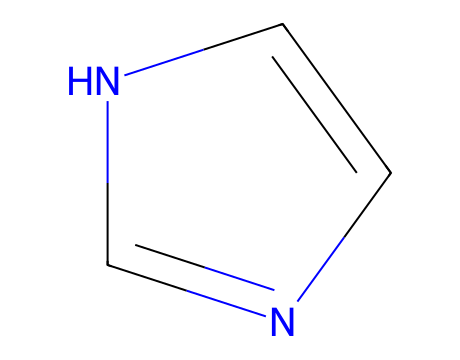
Imidazole (noyau)à dessiner
pas de nom commercial au cours
Dérivés azoliques — Noyau des imidazolés
Noyau : Hétérocycle aromatique à 5 chaînons avec 2 atomes d'azote (positions 1 et 3)
Mécanisme : Liaison d'un azote du noyau au fer de l'hème des CYP450 (CYP51 fongique et CYP humains) (p.130).
Structure-activité
Noyau commun des imidazolés antifongiques (clotrimazole, miconazole, kétoconazole…) et des nitroimidazolés antiprotozoaires (métronidazole). Dans les antifongiques, il est substitué sur l'azote N1 ; l'autre azote se lie au fer de l'hème du CYP51 (p.130).
IMIDAzole : 2 N dans un cycle à 5 ; TRIazole : 3 N.
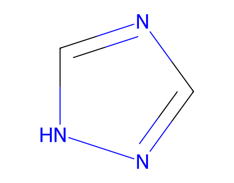
1,2,4-Triazole (noyau)à dessiner
pas de nom commercial au cours
Dérivés azoliques — Noyau des triazolés
Noyau : Hétérocycle aromatique à 5 chaînons avec 3 atomes d'azote (1,2,4-triazole), relié par N1 au reste de la molécule
Mécanisme : Un azote du noyau se lie au fer de l'hème du CYP51 fongique (p.130).
Structure-activité
Dans les structures du cours (itraconazole p.134, fluconazole p.135), l'azote supplémentaire du triazole (par rapport à l'imidazole) est mis en rouge. Triazolés : itraconazole, posaconazole, fluconazole, voriconazole, utilisés per os.
Azote mis en rouge dans le cycle triazole de l'itraconazole et du fluconazole (p.134-135) : c'est l'azote en plus par rapport à l'imidazole.
Noyau : Imidazole N-substitué par un carbone trityle (2 phényles + 1 o-chlorophényle)
Mécanisme : Le noyau azolé (imidazole/triazole) se lie par un azote au fer de l'hème du CYP51 fongique (stérol 14-α-déméthylase) → blocage de la synthèse de l'ergostérol (p.130).
Carbone central portant 3 cycles aromatiques (dont un 2-chlorophényle) relié à l'azote N1 de l'imidazole. Le bifonazole a un biphényle et un H à la place.
CLOTRImazole : un CLOu à TRois cycles (trityle) planté sur l'imidazole.
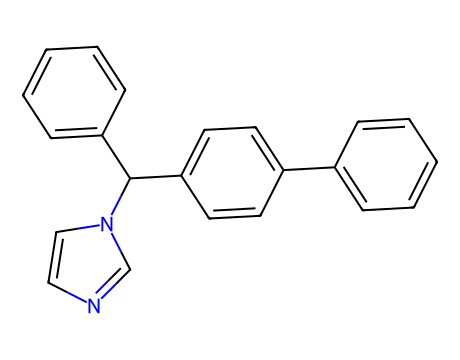
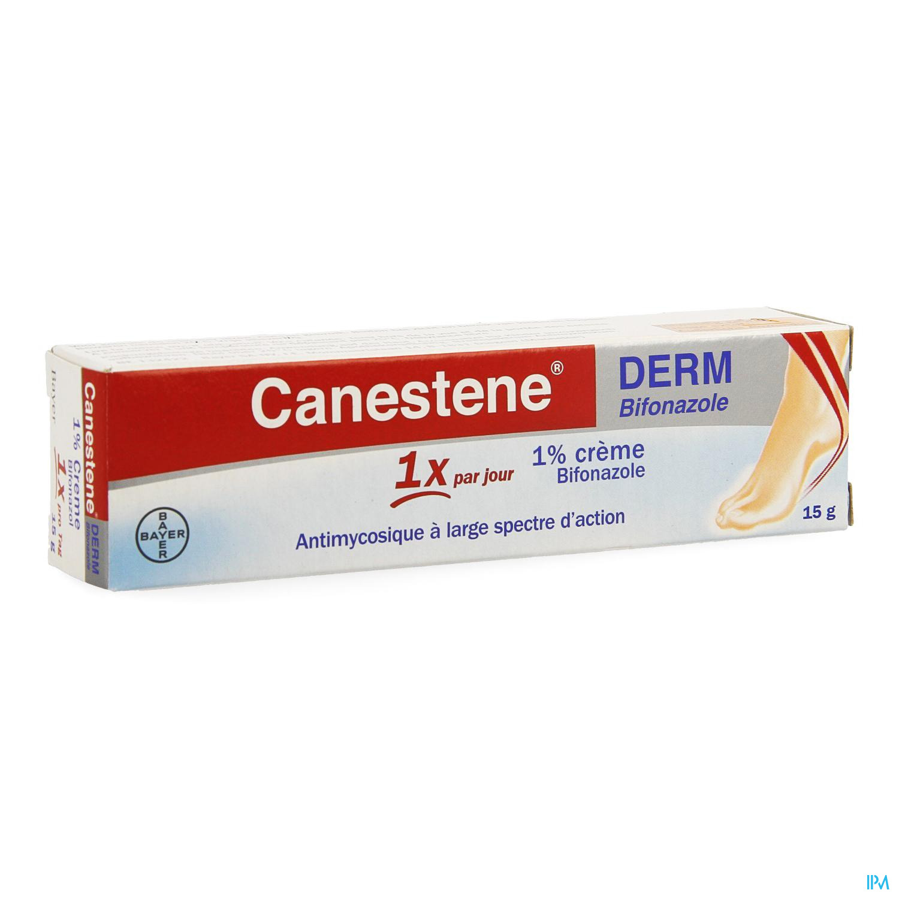
CANESTENE DERM BIFONAZOLE®
Bifonazoleà reconnaître
CANESTENE DERM BIFONAZOLE®
Dérivés azoliques — Imidazolés (usage local)
Noyau : Imidazole N-substitué par un CH portant un phényle et un biphényle (BI-phényle → BI-fonazole)
Mécanisme : Le noyau azolé (imidazole/triazole) se lie par un azote au fer de l'hème du CYP51 fongique (stérol 14-α-déméthylase) → blocage de la synthèse de l'ergostérol (p.130).
Mécanisme : Le noyau azolé (imidazole/triazole) se lie par un azote au fer de l'hème du CYP51 fongique (stérol 14-α-déméthylase) → blocage de la synthèse de l'ergostérol (p.130).
Indications : Infections mycosiques superficielles de la peau glabre : espaces interdigitaux des pieds et des mains, zone inguinale et génitale (p.131)
Structure-activité
Isomère du miconazole : le benzyle porte ses 2 Cl en 2,6 (isoconazole) au lieu de 2,4 (miconazole). Ces Cl sont en rouge dans le cours (p.132).
Les deux Cl du cycle benzylique (positions 2,6) sont en rouge dans la structure (p.132) : c'est ce qui le distingue du miconazole.
ISOconazole = ISOmère du miconazole (Cl en 2,6 sur le benzyle).
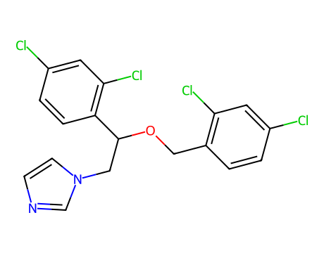
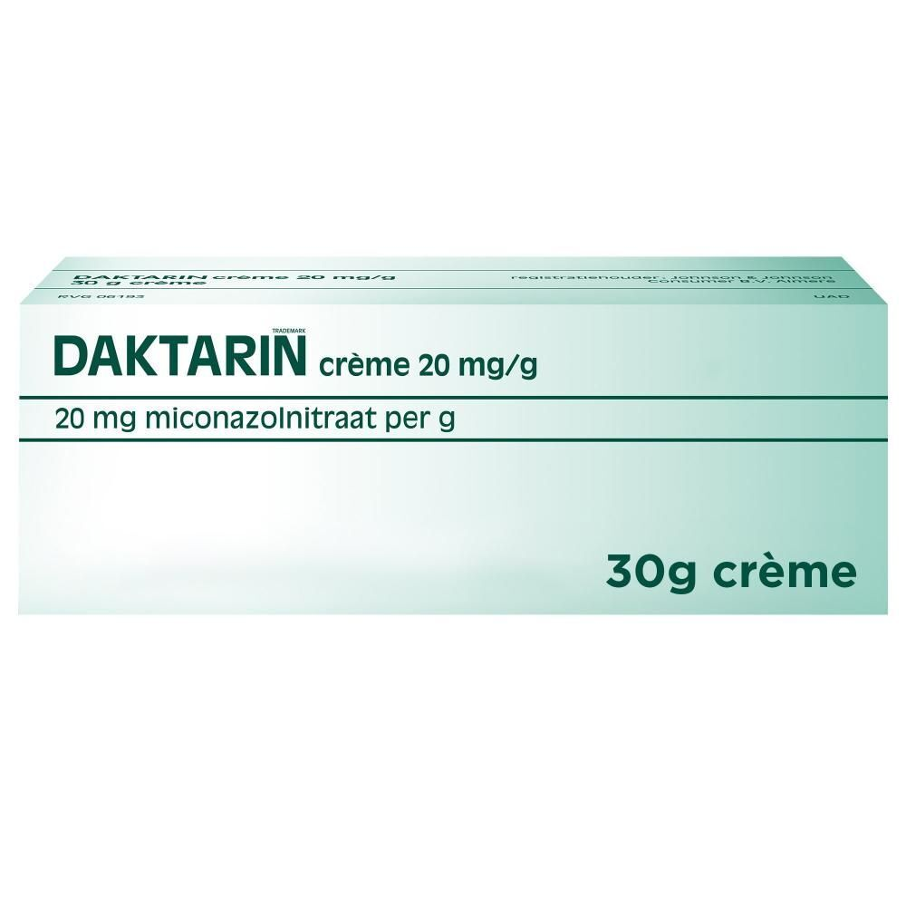
DAKTARIN®
Miconazole (nitrate de miconazole)à dessiner
DAKTARIN®, DAKTOZIN® (+ oxyde de zinc), DAKTACORT® (+ hydrocortisone), ACNEPLUS® (+ peroxyde de benzoyle)
Mécanisme : Le noyau azolé (imidazole/triazole) se lie par un azote au fer de l'hème du CYP51 fongique (stérol 14-α-déméthylase) → blocage de la synthèse de l'ergostérol (p.130).
Indications : Usage externe (depuis longtemps) : dermatite des langes due à Candida albicans (DAKTARIN®, DAKTOZIN®), En association avec un corticoïde (DAKTACORT®) ou avec le peroxyde de benzoyle (ACNEPLUS®), Usage vaginal en crème ou ovules (GYNO-DAKTARIN®)
Structure-activité
Quatre Cl : 2,4-dichlorophényle sur le carbone de l'éther ET 2,4-dichlorobenzyle (Cl en rouge p.132). L'isoconazole a le benzyle en 2,6-dichloro.
Cl du cycle benzylique (positions 2,4) en rouge dans la structure (p.132).
DAKTARIN : pour les fesses de bébé (dermatite des langes), DAKTOZIN = + ZINc.
Mécanisme : Le noyau azolé (imidazole/triazole) se lie par un azote au fer de l'hème du CYP51 fongique (stérol 14-α-déméthylase) → blocage de la synthèse de l'ergostérol (p.130). En endocrinologie : inhibiteur de la stéroïdogenèse (17α-hydroxylase surtout, 11-hydroxylation, enzyme de clivage de la chaîne latérale du cholestérol à doses élevées, lyase C17-20) → inhibe la synthèse du cortisol, de l'aldostérone et des androgènes (p.133).
Indications : Crème et shampooing (anti-pelliculaire, mycose du cuir chevelu) : NIZORAL® (p.132), Exceptionnellement per os dans des infections systémiques graves (p.132), Comprimés de 200 mg : syndrome de Cushing chez l'adulte et l'enfant de plus de 12 ans (p.133), Pityriasis versicolor en usage externe (1 application par jour pendant 1 à 5 jours) (p.138)
Structure-activité
Imidazolé à dioxolane et pipérazine acétylée ; l'itraconazole et le posaconazole en sont chimiquement proches mais ont un triazole.
Mécanisme : Le noyau azolé (imidazole/triazole) se lie par un azote au fer de l'hème du CYP51 fongique (stérol 14-α-déméthylase) → blocage de la synthèse de l'ergostérol (p.130).
Indications : Mycoses systémiques graves, plus fréquentes chez les immunodéprimés (p.134), Aspergillose (p.134)
Structure-activité
Chimiquement proche du kétoconazole (même dioxolane 2,4-dichlorophényle) mais triazole à la place de l'imidazole ; longue chaîne terminée par une triazolone N-sec-butyle.
Mécanisme : Le noyau azolé (imidazole/triazole) se lie par un azote au fer de l'hème du CYP51 fongique (stérol 14-α-déméthylase) → blocage de la synthèse de l'ergostérol (p.130).
Structure proche de l'itraconazole et du kétoconazole (p.134) ; tétrahydrofurane et 2,4-difluorophényle au lieu du dioxolane dichloré, chaîne terminale hydroxylée.
Noyau : Propan-2-ol portant 2 × (1,2,4-triazol-1-ylméthyl) et un 2,4-difluorophényle
Mécanisme : Le noyau azolé (imidazole/triazole) se lie par un azote au fer de l'hème du CYP51 fongique (stérol 14-α-déméthylase) → blocage de la synthèse de l'ergostérol (p.130).
Indications : Mycoses systémiques graves, plus fréquentes chez les immunodéprimés (p.134)
Structure-activité
Triazolé chimiquement plus simple (p.134) : deux triazoles, un 2,4-difluorophényle, un OH tertiaire ; pas de centre chiral.
FLUconazole = 2 FLUors + 2 triazoles, symétrique et simple.
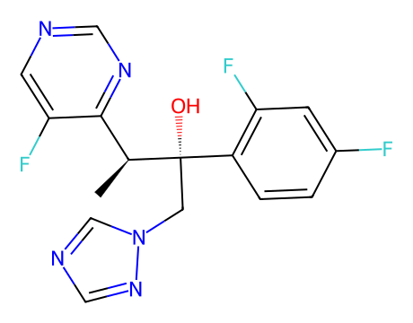
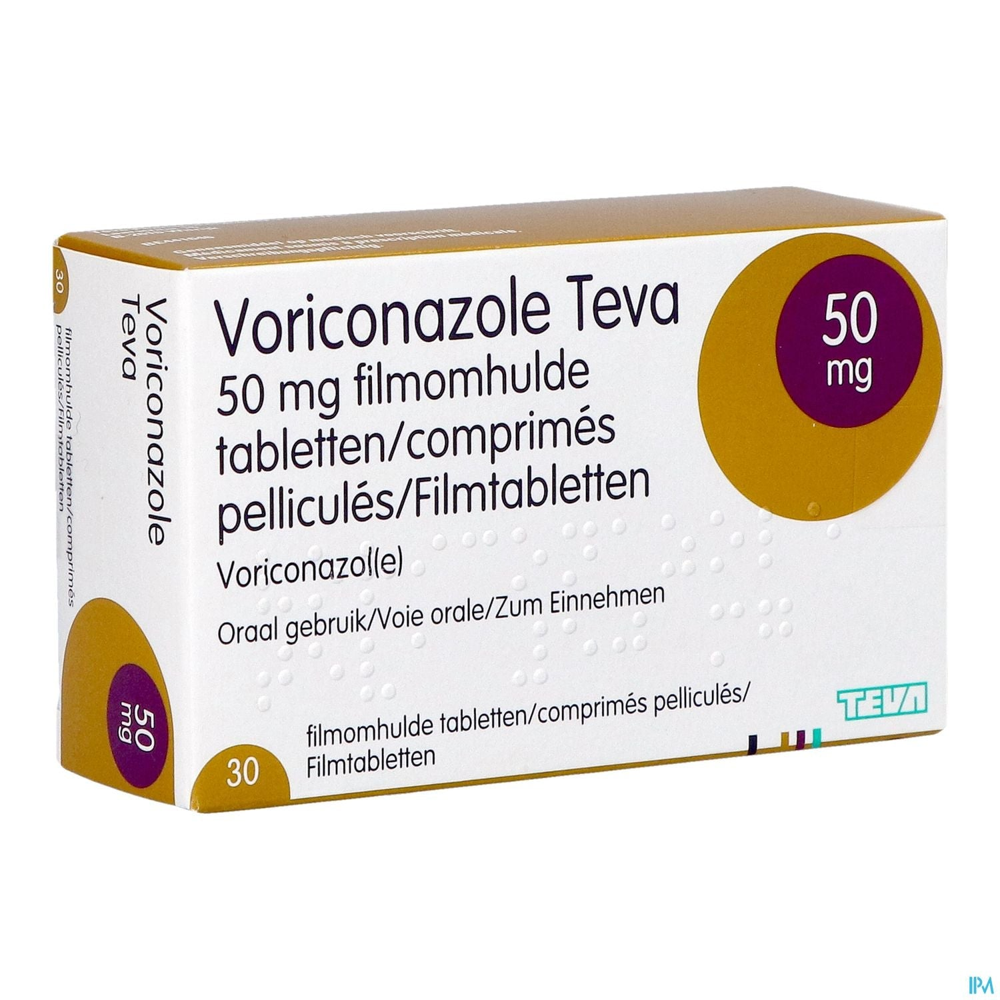
VORICONAZOLE TEVA®
Voriconazoleà reconnaître
VFEND®, VORICONAZOLE TEVA®, VORICONAZOLE SANDOZ®
Dérivés azoliques — Triazolés (per os)
Noyau : Comme le fluconazole mais un triazole est remplacé par une 5-fluoropyrimidine (+ un méthyle)
Mécanisme : Le noyau azolé (imidazole/triazole) se lie par un azote au fer de l'hème du CYP51 fongique (stérol 14-α-déméthylase) → blocage de la synthèse de l'ergostérol (p.130).
Indications : Infections invasives à Aspergillus résistant aux autres traitements (au même titre que la caspofungine) (p.137)
Structure-activité
Chimiquement proche du fluconazole (p.135) : un des deux triazoles est remplacé par un 5-fluoropyrimidin-4-yle portant un CH(CH3) ; 2 centres chiraux.
Mécanisme : Inhibe la biosynthèse de l'ergostérol à un autre stade que les azolés : inhibition de la squalène époxydase (pas de la 14-déméthylase) (p.136).
Indications : Per os : mycoses cutanées graves (pas celles à Candida) et onychomycoses sévères (p.136), Usage externe (LAMISIL® crème et spray) : mycoses chez le sportif (p.136), Pityriasis versicolor en usage externe (p.138)
Structure-activité
Pas d'azole : amine tertiaire avec naphtalène, double liaison E et triple liaison.
TERBINAFINE → squalène époxydase : « TER(re) » avant le lanostérol, plus tôt que les azolés.
Dérivés de la morpholine
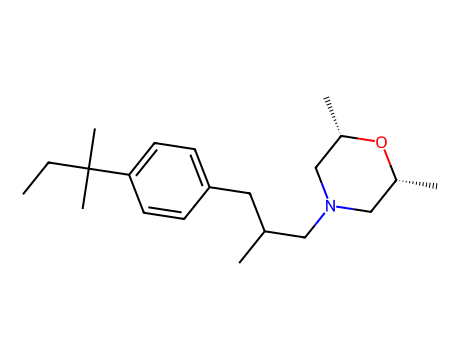
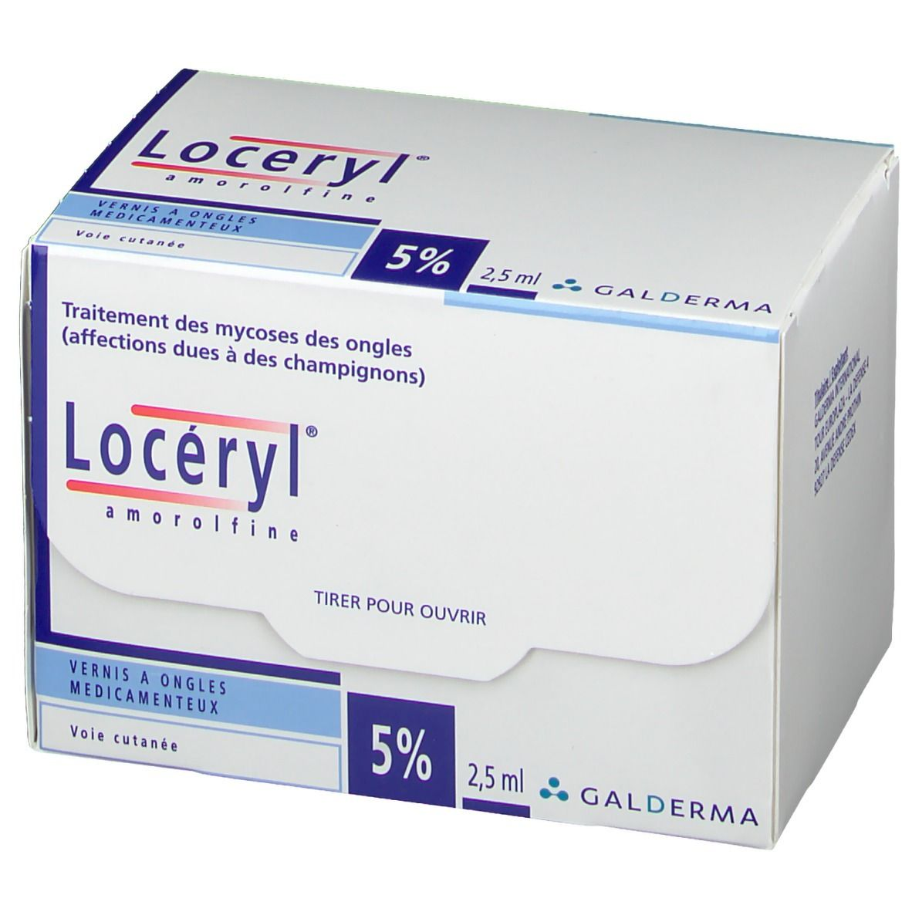
LOCERYL®
Amorolfineà reconnaître
LOCERYL®, CURANAIL®, AMOROLFINE TEVA®
Dérivés de la morpholine — Vernis à ongles
Noyau : cis-2,6-Diméthylmorpholine N-substituée par une chaîne 2-méthyl-3-(4-tert-pentylphényl)propyle
Mécanisme : Inhibe deux enzymes de la transformation du zymostérol en ergostérol → s'oppose à la biosynthèse de l'ergostérol (p.136-137).
Indications : Onychomycoses, sous forme de vernis à ongles (p.136)
Structure-activité
Dérivé de la morpholine : chimiquement différent des imidazolés et triazolés (p.136).
AMOROLFINE = MORpholine sur l'ongle (LOCERYL = vernis).
Mécanisme : Interagit avec l'ergostérol de la membrane des levures et champignons sensibles → formation de pores (canaux perméables aux cations, sortie de K+ du cytoplasme) (p.128).
Indications : IV : formes graves de mycoses systémiques et/ou profondes (p.129), Per os : candidoses digestives (n'est plus commercialisée avec cette indication) (p.128)
Structure-activité
Macrolide à enchaînement de doubles liaisons conjuguées (7) avec un aminosucre fixé (p.127). La nystatine a la même allure mais sa chaîne conjuguée est interrompue.
AMPHO-B : B comme « Bouche les reins » (néphrotoxique) ; AMBISOME = liposome.
Mécanisme : Comme les polyènes : liaison à l'ergostérol membranaire → pores (p.128).
Indications : Affections bucco-pharyngées : suspension pour traiter les candidoses oropharyngées, fréquentes chez les immunodéprimés (VIH+, sous corticoïdes…) (p.129)
Structure-activité
Structure qui ressemble à celle de l'amphotéricine B mais moins efficace (p.129) ; chaîne de doubles liaisons interrompue par un CH2–CH2.
NYSTATINE = « NY » pour la bouche : suspension buccale.
Cible des antifongiques
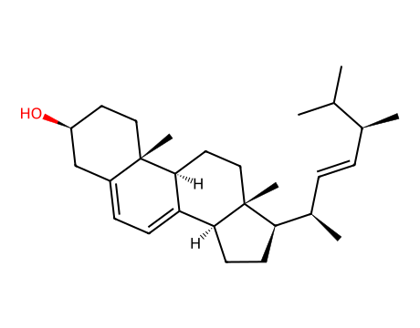
Ergostérolà reconnaître
pas de nom commercial au cours
Cible des antifongiques — Stérol membranaire fongique (≠ cholestérol humain)
Noyau : Stérol (cyclopentanoperhydrophénanthrène) avec doubles liaisons Δ5, Δ7 et Δ22, méthyle en C24
Mécanisme : Cible des polyènes (liaison → pores) ; sa biosynthèse est bloquée par les azolés (CYP51), la terbinafine (squalène époxydase) et l'amorolfine (zymostérol → ergostérol) (p.128-137).
Structure-activité
Pas un médicament mais la cible : constituant essentiel de la membrane des champignons ; chez les mammifères, c'est le cholestérol. Dans la structure p.130, ce qui le distingue du cholestérol est en rouge : double liaison en 7, double liaison de la chaîne latérale et méthyle supplémentaire.
Différences avec le cholestérol en rouge dans la structure p.130 (double liaison du cycle B en 7, double liaison de la chaîne latérale, méthyle supplémentaire).
Échinocandines
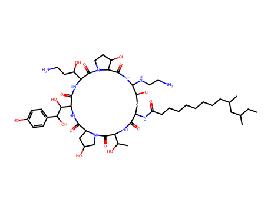
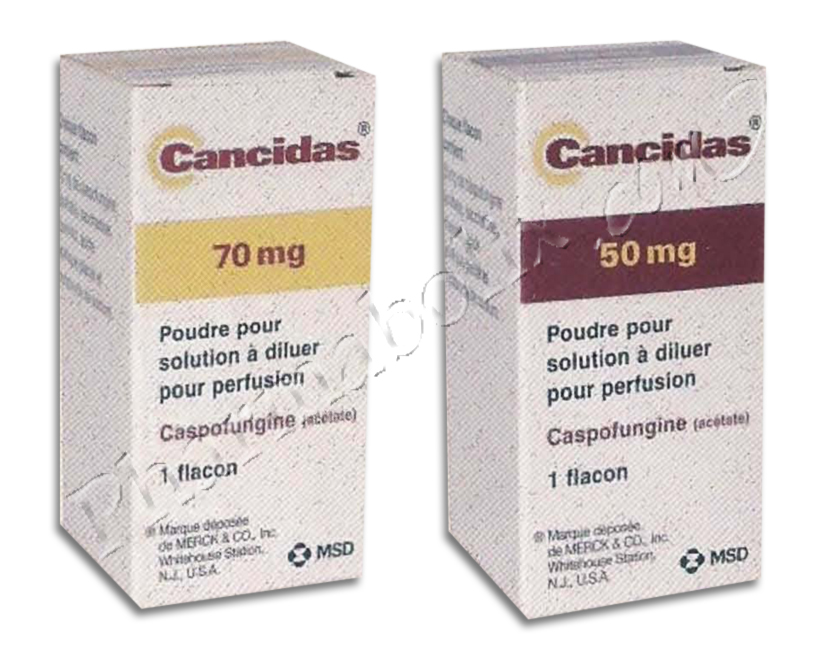
CANCIDAS®
Caspofungineà reconnaître
CANCIDAS®, CASPOFUNGINE SANDOZ®
Échinocandines — Lipopeptide hémisynthétique
Noyau : Hexapeptide cyclique (hydroxyprolines, thréonine, homotyrosine dihydroxylée, ornithines modifiées) N-acylé par un acide gras ramifié (diméthylmyristoyle)
Mécanisme : Inhibe la 1,3-β-D-glucane synthase → altère la synthèse du β-(1,3)-D-glucane de la paroi fongique (paroi = chitine + glucane). Rappelle le mécanisme des β-lactames chez les bactéries (p.137).
Indications : Infections invasives à Candida, Infections invasives à Aspergillus résistant aux autres traitements (comme le voriconazole) (p.137)
Structure-activité
Lipopeptide : cycle peptidique + longue chaîne lipidique ; donné sous forme d'acétate (2 CH3COOH). SMILES sans stéréochimie.
CASPO = CASse la Paroi (glucane), comme une β-lactame pour champignons.
Autres antimycosiques
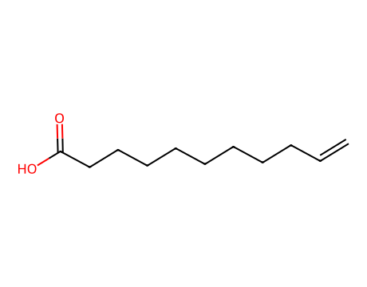
Acide undécyléniqueà reconnaître
pas de nom commercial au cours
Autres antimycosiques — Acide gras insaturé
Noyau : CH2=CH-(CH2)8-COOH
Indications : Antimycosique, notamment en shampooing (p.138)
Structure-activité
Acide gras à 11 C avec une double liaison terminale (formule donnée dans le cours p.138).
Indications : Antiseptique ; reste un antimycosique de choix (p.138), Excellent antifongique, antibiotique et même virucide en usage externe (p.167)
Structure-activité
À dessiner : motif polyvinylpyrrolidone (cycle pyrrolidin-2-one sur N, chaîne –CH–CH2–) entre crochets, n, · I2. Le SMILES ne donne que I2 (le polymère n'est pas représentable).
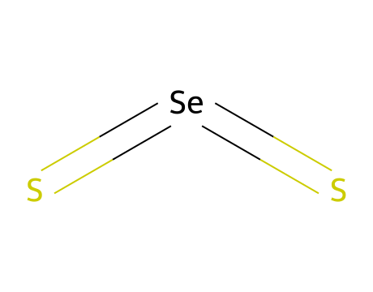
Sulfure de séléniumà reconnaître
pas de nom commercial au cours
Autres antimycosiques — Minéral
Noyau : SeS2 (structure non dessinée dans le cours)
Indications : Était utilisé dans le pityriasis versicolor (p.138), Adjuvant dans la séborrhée du cuir chevelu avec présence de Pityrosporum (p.138)
Structure-activité
Composé minéral (non dessiné dans le cours).
Autres antimycosiques / antiseptiques gynécologiques
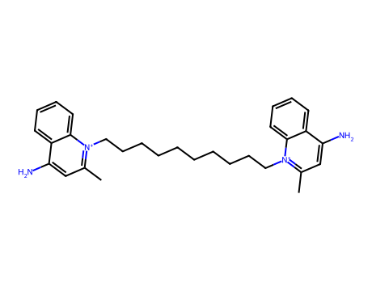
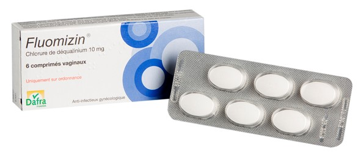
FLUOMIZIN
Chlorure de déqualiniumà reconnaître
FLUOMIZIN
Autres antimycosiques / antiseptiques gynécologiques — Dérivé de la quinoléine, tensioactif (bis-ammonium quaternaire)
Noyau : Deux 4-amino-2-méthylquinoléiniums reliés par leurs N+ via une chaîne (CH2)10 ; · 2 Cl-
Mécanisme : Substance tensioactive : augmente la perméabilité des cellules bactériennes → diminution de l'activité enzymatique → mort cellulaire (p.139).
Indications : Vaginose bactérienne, en comprimés vaginaux (FLUOMIZIN) (p.139)
Structure-activité
Deux noyaux quinoléinium quaternaires (dérivé de la quinoléine) reliés par (CH2)10 ; SMILES = dication (les 2 Cl- non inclus).
Ce que le prof a dit en cours
Deux choses à retenir : les enzymes de la synthèse de l'ergostérol sont proches de celles du cholestérol, et le mécanisme d'action des azolés explique toutes leurs interactions (inhibition des CYP).
Imidazolés -> triazolés : remplacer l'imidazole par le triazole donne des molécules plus complexes, utilisables per os ; pas besoin de retenir les structures détaillées, mais savoir que l'azote est substitué par des noyaux aromatiques.
Griséofulvine : premier produit agissant sur la polymérisation de la tubuline (fil rouge avec mébendazole, colchicine, alcaloïdes de la pervenche, taxanes).
Kétoconazole : plus utilisé per os (hépatotoxicité) ; usage externe (pellicules, shampooing). Inhibe aussi la synthèse du cortisol : syndrome de Cushing.
Polyènes (amphotéricine B, nystatine) : se lient à l'ergostérol et forment des pores ; partie hydrophile/hydrophobe.
Les questions posées par le prof
Relevées dans tes enregistrements du cours (et ta base Notion « Questions d'Examen »). Le prof : « vous pourrez avoir toutes mes questions d'examen, je vais vous les donner au fur et à mesure ». Les questions marquées « reformulée » reprennent un point que le prof a expliqué en détail ce jour-là, transformé en question. Réponds d'abord sur papier, puis ouvre la réponse pour te corriger.
18/09/2025Les antifongiques azolés inhibent une enzyme clé de la synthèse de l'ergostérol : laquelle ? (stérol 14-α-déméthylase, CYP51) Voir la réponse
La lanostérol 14-α-déméthylase (CYP51), enzyme à cytochrome P450 de la synthèse de l'ergostérol.
18/09/2025Pourquoi s'appellent-ils « azolés », quel est leur mécanisme d'action ? Voir la réponse
« Azolés » car ils portent un noyau azole : imidazole (2 N) ou 1,2,4-triazole (3 N). L'azote non substitué se lie au fer de l'hème de la 14-α-déméthylase -> plus d'ergostérol, accumulation de stérols méthylés toxiques -> membrane fongique altérée (fongistatique).
16/10/2025Expliquez pourquoi le mécanisme d'action des azolés explique les interactions médicamenteuses rencontrées chez les patients. Voir la réponse
La cible est un CYP : l'azole se lie aussi aux CYP humains (surtout 3A4) et augmente les concentrations des médicaments qu'ils métabolisent. Le même mécanisme explique l'hépatotoxicité et l'inhibition de la synthèse des stéroïdes (kétoconazole).
13/11/2025Peut-on utiliser le kétoconazole (inhibiteur de la synthèse endogène de cortisol, syndrome de Cushing) chez un patient sous corticoïdes oraux ? (non) Voir la réponse
Non : le kétoconazole inhibe la synthèse endogène de cortisol (utilisé dans le syndrome de Cushing) et les CYP qui métabolisent les corticoïdes : risque d'interaction et de déséquilibre ; incohérent avec un traitement corticoïde.
Fiche de révision au format de l'examen
Examen écrit, 1 h 30 — 10 pages dont 1 de brouillon. Entraîne-toi dans les conditions : réponds sur papier, puis ouvre le corrigé.
Partie 1 — Questions ouvertes (environ 2 pages chacune)
Question 1. Parlez-moi des antimycosiques azolés.
Le plan attendu (sous-questions)
Cible et mécanisme
Structures
Imidazolés (surtout usage local)
Triazolés (per os, systémiques)
Interactions et effets indésirables
Corrigé détaillé
Cible et mécanisme
Inhibition de la lanostérol 14-α-déméthylase (CYP51), enzyme à cytochrome P450 de la synthèse de l'ergostérol, stérol de la membrane fongique (≠ cholestérol humain). L'azote N3 (imidazole) ou N4 (triazole) se coordonne au fer de l'hème.
Structures
Noyau imidazole (2 N) ou 1,2,4-triazole (3 N) dont un azote est substitué par des noyaux aromatiques (souvent halogénés).
Inhibition des CYP humains (CYP3A4) -> augmentation des taux d'autres médicaments ; kétoconazole : hépatotoxicité, inhibition de la stéroïdogenèse (utilisé dans le syndrome de Cushing).
Question 2. Classez les antimycosiques selon leur cible.
Le plan attendu (sous-questions)
Membrane - ergostérol
Paroi fongique
Microtubules
Autres
Corrigé détaillé
Membrane - ergostérol
Polyènes (amphotéricine B : ABELCET®, AMBISOME® ; nystatine) se fixent sur l'ergostérol et forment des pores. Azolés et allylamines (terbinafine, LAMISIL® : squalène époxydase) et morpholines (amorolfine, LOCERYL®) bloquent sa synthèse.
Paroi fongique
Échinocandines (caspofungine, CANCIDAS®) : inhibition de la β-1,3-glucane synthase.
Microtubules
Griséofulvine : inhibe la polymérisation de la tubuline (dermatophytes).
Autres
Antiseptiques : polyvidone iodée (ISOBETADINE®), acide undécylénique, sulfure de sélénium, chlorure de déqualinium.
Partie 2 — QROC (réflexion, réponse courte)
QROC 1. Pourquoi les azolés provoquent-ils de nombreuses interactions médicamenteuses ?
Réponse
Parce que leur cible, la 14-α-déméthylase, est un cytochrome P450 : l'azote du noyau azolé se lie au fer de l'hème. La sélectivité pour le CYP fongique n'est que partielle : ils inhibent aussi les CYP hépatiques humains (surtout 3A4), d'où l'augmentation des concentrations des médicaments métabolisés par ces enzymes.
QROC 2. Qu'est-ce qui distingue l'ergostérol du cholestérol et pourquoi est-ce utile ?
Réponse
L'ergostérol (stérol fongique) possède des doubles liaisons supplémentaires (C7-C8, C22) et un méthyle en C24. Cette différence permet une certaine sélectivité des polyènes (affinité supérieure pour l'ergostérol) et des inhibiteurs de sa synthèse.
Partie 3 — Tableau de molécules
Comme à l'examen : chaque ligne te donne un indice (structure, DCI ou nom commercial). Complète le reste sur papier ou dans les cases, puis corrige. Structure à dessiner seulement si la molécule est en bleu gras souligné.